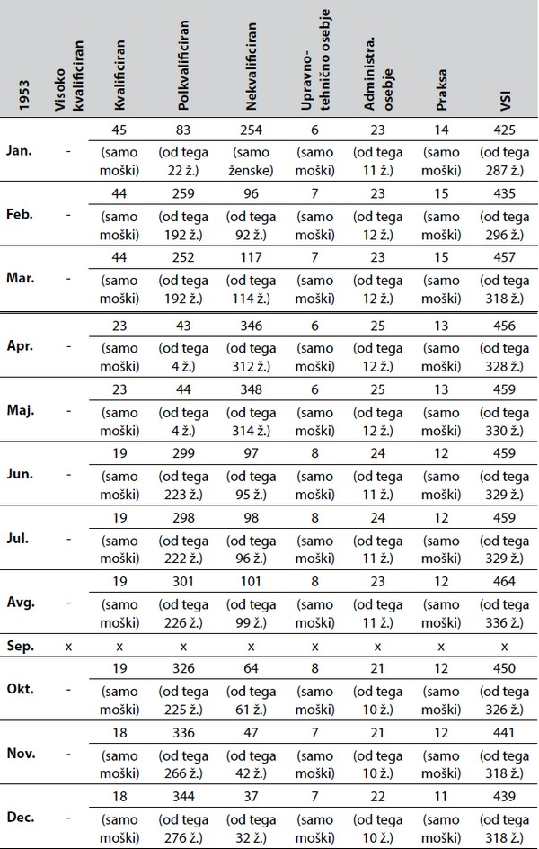
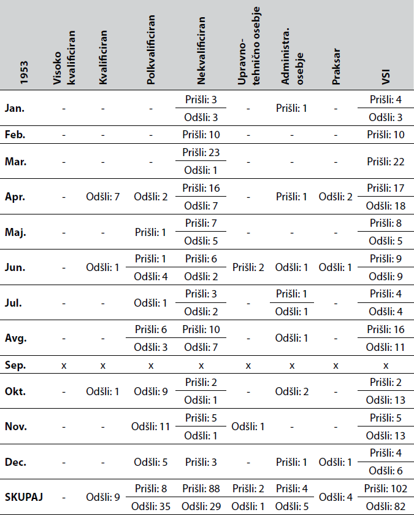

1Ribiška dejavnost je zgodovinska značilnost lokalnega gospodarstva Izole. V 19. stoletju se je na tem območju začela razvijati industrija predelave rib, ki je s širitvijo na predelovanje mesa, sadja in zelenjave zajela tudi kmečko pridelavo. Industrija in z njo povezana ribolov ter kmečka pridelava so predstavljali glavni vir preživetja lokalnega prebivalstva. Prispevek obravnava vpliv istrskega eksodusa (tj. velikih demografskih sprememb, do katerih je prišlo med letoma 1945 in 1960 v primorskem prostoru) na izolsko predelovalno industrijo živil. Dejavnost, ki je v obravnavani dobi postala še bolj odvisna od ročnega dela ter delovne sile, se je med procesom dvojne restrukturalizacije družbe, političnega in gospodarskega sistema spopadala z različnimi kadrovskimi problemi, katerih posledice so se kazale tudi v proizvodnji izolskih tovarn/podjetij.
2Ključne besede: Izola, migracije, predelovalna industrija živil, industrijska proizvodnja, Delamaris
1Fishing is a historical feature of Izola’s local economy. During the 19th century, the fish processing industry started to develop in this area. Later, it expanded to agricultural production by also including meat, fruit, and vegetable processing. This industry and the associated fishing and agricultural production represented the primary source of the local population’s livelihood. The contribution discusses the impact of the Istrian exodus (i.e. significant demographic changes taking place between 1945 and 1960 in the Littoral region) on the food processing industry in Izola. This activity, which became even more dependent on manual labour and manpower in the period under consideration, faced various human resource problems during the process of dual (political and economic) restructuring of society, whose consequences were also reflected in the production of Izola’s factories/companies.
2Keywords: Izola, migrations, food processing industry, industrial production, Delamaris
1Izola je bila skupaj s svojo okolico zgodovinsko povezana z ribiško dejavnostjo. V zadnji tretjini dolgega 19. stoletja se je ta dejavnost tesno povezala z modernim tehnološko-znanstvenim napredkom in območje se je s pomočjo tujega francoskega (kasneje tudi italijanskega, avstrijskega, angleškega in lokalnega) kapitala postopoma oblikovalo v središče ribje predelovalne industrije v Istri in na Balkanu.1 Proces industrializacije je pomenil uspešno vključitev tradicionalno prisotne gospodarske dejavnosti v moderne razvojne tokove, ne le v smeri vpeljevanja industrijskega načina dela, ampak tudi v smeri rabe znanstveno-tehničnih odkritij ter modernega razvoja konzerviranja živil v pločevinastih steriliziranih in hermetično zaprtih posodicah oziroma konzervah. Nicolas Appert je leta 1804 izdelal prve konzerve hrane (tj. pred Pasteurjem in njegovim mikrobiološkim odkritjem t. i. pasterizacije) ter dokazal, da s termično obdelavo živil preprečimo mikroorganizmom v živilih kvarjenje oziroma njihov razkroj. Slabih deset let kasneje sta Nizozemec Dutsch in Anglež Durand začela izdelavo konzervnih »škatlic« iz bele pločevine, ki jo je Anglež Taylor v štiridesetih letih 19. stoletja nadgradil še z litografijo.2
2Na območju Izole je med letoma 1879 in 1884 nastalo pet tovarn: tovarna Roullet, tovarna Warhanek, tovarna Degrassi, tovarna Noerdlinger in tovarna Troian/Trojan. Tovarni Francoza Émilla Louisa Roulleta in Dunajčana Carla Warhanka sta sprva obe začeli predelavo »malih plavih rib« (sardin, jegulj ipd.). Prva je nato v zadnjih dveh desetletjih 19. stoletja začela širiti svoj proizvodni asortima na konzerviranje graha, govejega mesa in sliv ter proizvodnjo gnojila iz ribjih ostankov in drugih morskih živali, kasneje v obdobju med obema vojnama pa tudi na proizvodnjo ribje moke, ribjega olja, jušnih kock, paštet ter predelavo zelenjave (med drugim paradižnika) in inčunov.3Druga, tovarna Warhanek, je v osemdesetih letih 19. stoletja prav tako začela proizvajati gnoj iz ribjih odpadkov ter predelovati slive v marmelado, kasneje v medvojnem obdobju pa je začela proizvajati jušne kocke in mesne ekstrakte, antipaste oziroma različne vrste konzerviranega sadja in zelenjave (olive, artičoke, paradižnike, kumarice ipd.).4 Domačin Giovanni Degrassi je v svoji tovarni poleg »male plave ribe« konzerviral še grah in paradižnik, tovarna bratov Noerdlinger pa se je ukvarjala predvsem s predelovanjem sliv, v manjši meri tudi rib.5 Tovarna Trojan & Co. naj bi se ukvarjala le s predelavo rib.6 Izolska predelovalna industrija je bila usmerjena predvsem v predelavo rib, vendar so poleg rib relativno hitro začeli predelovati tudi meso, sadje in zelenjavo, v medvojnem obdobju pa so s kombiniranjem teh surovin ustvarjali popolnoma nove produkte (na primer jušne kocke). To je pomenilo, da so tovarne aktivno širile svoje proizvodne, poslovne in zaposlitvene možnosti, že od samih začetkov svojega delovanja.7
3Redni odkup ulova je za izolske ribiče pomenil razbremenitev težav pravočasne prodaje viška dnevnega ulova, ki jim ga ni uspelo prodati prek drugih kanalov (denimo strankam za porabo), ali zalog že soljene ribe. Prav tako so bili razbremenjeni tudi kmetje, ki so na primer dobili trg za svoje pridelke v neposredni bližini kmetij (lažji transport) ali pa dodatne možnosti služenja denarja.8
4S podpisom Rapalske pogodbe po koncu prve svetovne vojne je ta prostor pod italijansko državo. Sledilo je približno dve desetletji dolgo obdobje (pri tem izpuščam čas druge svetovne vojne) gospodarsko uspešnega poslovanja petih nekdanjih in ene na novo vzpostavljene izolske tovarne za predelavo rib, zelenjave, sadja in mesa, ki so sicer delovale v družbeno napetem ozračju zaradi poitalijančevanja. Leta 1920 je italijanski koncern S. A. Conservifici prevzel obratovanje štirih izolskih tovarniških obratov za predelavo rib in drugih živil, ki so bili vzpostavljeni med letoma 1879 in 1884: francosko tovarno Roullet, ki je bila leta 1930 preimenovana v Ampelea S. A. Conservifici, tovarno Noerdlinger, tovarno Degrassi, ki je bila do sredine dvajsetih let 20. stoletja preimenovana v Torrigiani, in tovarno Trojan.9 Tovarno Warhanek je v dvajsetih letih prevzel koncern Società Anonima Prodotti Alimentari G. Arrigoni & CO, ki je leta 1926 tovarni dal tudi njeno najbolj poznano ime – Arrigoni.10 Leta 1925 je bila na območju Izole vzpostavljena še ena nova, tj. šesta tovarna za predelavo različnih živil, tovarna Delise.11 Podjetja so se vključila na visoko konkurenčen italijanski trg v kontekstu dirigiranega državnega gospodarstva, povečano povpraševanje (in ponudba) pa sta spodbujala širitev obsega proizvodnje, kar se je med drugim kazalo v vzpostavitvi nove tovarne za predelavo rib, naraščanju števila zaposlenih v industriji, vzpostavitvi lastne ribiške flote ter povečevanju lovnih in predelovalnih kapacitet (denimo več ladij, boljši stroji) itn.12
5Konec druge svetovne vojne je pomenil novo obdobje življenja in razvoja mesta. Po vojni je ta prostor (približno) celo desetletje živel v nekakšnem politično-gospodarskem limbu, ki se je končal šele s podpisom Londonskega memoranduma leta 1954 ter Videmskega sporazuma leta 1955, kar je sprožilo največji val izseljevanja prebivalstva iz slovenskega Primorja. Istočasno je to pomenilo dokončno in formalno priključitev gospodarskega prostora cone B v nov samoupravni socialistični gospodarski prostor Jugoslavije. Duh individualne predvojne tržne konkurence je nadomestil duh kolektivnosti. Z vidika delovanja gospodarskega mikrosistema Izole je uveljavljanje novega sistema doseglo vrh z nastankom Kombinata konzervne industrije Delamaris (KKID) leta 1959, ko je bilo obratovanje treh tovarn – tovarne (Ex)Ampelea/Iris/Roullet,13 tovarne Arrigoni/Warhanek v Izoli ter tovarne De Langlade/Ikra v Kopru – in uvozno-izvoznega podjetja Delamaris združeno v en, enoten večji gospodarski subjekt.14 Namen združitve treh tovarniških obratov in trgovskega podjetja v kombinat je bila lažja organizacija proizvodnje in prodaje njihovih izdelkov.15 Uvajanje novega komunističnega gospodarskega sistema je na območju cone B sicer potekalo ideološko manj eksplicitno in postopoma vse od konca druge svetovne vojne dalje (na primer z uvajanjem družbene lastnine, vzpostavitvijo delavskih svetov in upravnih odborov podjetij itn.).16
6Razvoj izolske živilsko-predelovalne industrije v drugi polovici petdesetih let 20. stoletja (tj. v letih njenega prehoda oziroma dokončnega vključevanja v jugoslovanski gospodarski prostor) je potekal v znamenju reševanja težav, do katerih je prihajalo zaradi več kot desetletje trajajočega negotovega položaja območja in intenzivnih demografskih sprememb. Zdi se, da je ravno intenzivna migracija prebivalstva delovala kot ključen vzrok težav, s katerimi se je industrija v tem času soočala pri svojem obratovanju. Ob tem velja opozoriti, da je do problemov prihajalo na različnih področjih dela (od ribolova do administracije) in v različnih skupinah delavcev (od nekvalificirane delovne sile do kvalificirane). Glavni namen pričujočega prispevka je predstaviti vpliv demografskih sprememb, tj. istrskega eksodusa, na proizvodnjo izolske predelovalne industrije.
1Eno pomembnejših vprašanj, ki se je odprlo po vojni, je bilo vprašanje meje med Jugoslavijo in Italijo. Vprašanje, ki je imelo korenine še v času prve svetovne vojne, je postalo po drugi svetovni vojni ponovno aktualno. Zahodni zavezniki niso priznavali sklepov kočevskega zbora in II. zasedanja Avnoja, po katerih naj bi Julijska krajina pripadala Jugoslaviji, s čimer so sprožili t. i. tržaško krizo.17 Prvi uradni dokument, ki je odprl vrata reševanju tega vprašanja, je bil Beograjski sporazum, podpisan 9. junija leta 1945. Območje Julijske krajine je bilo razdeljeno na dve okupacijski coni prek t. i. Morganove linije. Obe coni Julijske krajine sta bili uradno pod upravo zavezniške (cona A) ali jugoslovanske vojne uprave (cona B), čeprav – kot pove France Perovšek – je v coni B civilno oblast de facto izvajalo novoustanovljeno Poverjeništvo pokrajinskega narodnoosvobodilnega odbora.18 Cilj je bil zmanjšati možnost oboroženega spopada med jugoslovanskimi in zavezniškimi silami.19
2Prva formacija cone B je živela vse do podpisa Pariškega mirovnega sporazuma med Italijo in Jugoslavijo 10. februarja 1947 oziroma do končne uveljavitve pogodbe septembra tega leta.20 Dokument je preoblikoval sporno območje v t. i. Svobodno tržaško ozemlje, prav tako deljeno na dve coni, z nekaterimi manjšimi ozemeljskimi spremembami in že prej obstoječo notranjo mejo.21 Cona B je bila preoblikovana v drugo formacijo, v kateri je tudi dočakala svoj konec.22 Končno razrešitev te začasne rešitve naj bi predstavljalo imenovanje guvernerja s strani Varnostnega sveta OZN, ki naj bi prevzel vodenje obeh con v obliki nove (samostojne) državne tvorbe. V praksi pa bi slednje predstavljalo veliko oviro in malo možnosti za razrešitev tržaškega vprašanja, saj je vsaka sila želela imenovati nekoga, ki bi uveljavljal njene interese. Relativno hitro je postalo jasno, da bo treba najti drugo pot.23 Slovensko Primorje je tako ostalo v geopolitičnem limbu še nadaljnjih sedem let vse do podpisa Londonskega memoranduma oktobra 1954 oziroma Videmskega sporazuma avgusta 1955, s katerim se je tudi uradno začela normalizacija razmer.24 Na njegovo »dolgoživost« je močno vplivala spreminjajoča se pozicija Jugoslavije v mednarodnih vodah pred in po sporu z Informbirojem.
3Z vidika povojne gospodarske regeneracije širšega primorskega prostora je imela tržaška mednarodnopravna situacija zaviralen vpliv. Na eni strani je prostor izgubil vse večje trgovske in storitvene centre v Trstu, Gorici in Tržiču, na drugi pa so določila mednarodnega sporazuma zavirala celovito priključitev območja jugoslovanskemu in slovenskemu centralnoplanskemu oziroma kasneje samoupravnemu socialističnemu gospodarstvu. Obstoj možnosti, da bi bil prostor priključen Italiji, je inhibiral obsežnejše (finančno) investiranje jugoslovanske države v primorski prostor, hkrati je leta 1947 prišlo tudi do namerne degradacije proizvodnih sredstev.25 Volja oblasti po implementaciji določenih ukrepov, ki bi dajali potrebno dodatno podporo ponovnemu zagonu gospodarskega življenja, je bila omejena.26 Primer tega je bilo vprašanje valute – po določilih beograjskega sporazuma Jugoslavija ni smela vzpostaviti denarne unije s cono B, kar je oktobra leta 1945 pripeljalo do uvedbe t. i. jugolire, neuradno vezane na jugoslovanski dinar.27 Določilo je bilo odpravljeno s kasnejšo Pariško mirovno pogodbo. Leta 1949 je prišlo v coni B do uveljavitve monetarne unije oziroma zamenjave jugolire z dinarji.28
4Kljub omejevanju finančnih investicij in namerni degradaciji obstoječega kapitala je jugoslovanska oblast investirala v območje. Poleg zgoraj navedenega primera uvedbe najprej jugolire in kasneje dinarja velja izpostaviti podržavljenje podjetij leta 1947 in uvajanje delavskega samoupravljanja ter koncepta družbene lastnine od leta 1951 dalje.29 S tem si je jugoslovanska oblast aktivno prizadevala, da bi območje na koncu prešlo pod jugoslovansko suverenost.
5Med letoma 1945 in 1960 je v izolskih tovarnah prišlo do dveh opaznejših kriz oziroma zastojev in problemov v proizvodnji. Prvi zastoj se je odvil v letih neposredno po koncu druge svetovne vojne in je dosegel vrh leta 1947. Glavna vzroka zastoja proizvodnje sta bila sprva prekinitev utečenih poslovnih/trgovskih povezav30 ter pomanjkanje surovin, predvsem svežih rib in bele pločevine.31 Konec leta 1946 so stroji ostajali brez dela. Zaradi višje odkupne cene rib v Trstu so ribiči raje tihotapili ribe v cono A, kot pa jih prodajali tovarnam v coni B. Problem je predstavljalo tudi hudo pomanjkanje bele pločevine za izdelavo konzerv, gumijastih obročkov in olja, ki jih jugoslovanski oblasti kljub obljubam tovarnam ni uspelo zagotoviti. V začetku leta 1947 pa se je sklopu omenjenih zavor pridružila še evakuacija precejšnjega dela tovarniške opreme, strojev in surovin. Z njo sta dve največji izolski tovarni (Ampelea in Arrigoni) v celoti izgubili svojo ribiško floto, iz ene ali druge pa so bile evakuirane tudi hladilnice in ladjedelnica.32 Problem zagotavljanja zadostnih količin surovin se je poglobil, pridružil pa se mu je tudi problem izgube proizvodnih sredstev, tj. strojne opreme. V istem letu (1947) je podpis že omenjene Pariške mirovne pogodbe formalno omogočil možnost optiranja.33 Vsi omenjeni dejavniki so skupaj z ideološko-političnim pritiskom jugoslovanskih oblasti in zastraševanjem tako italijanskih oblasti kot tudi nekdanjih lastnikov tovarn, ki so ostali v coni A, povzročili drugi val izseljevanja izolskih delavcev in ribičev, tj. izgubo človeškega kapitala (več o fazah eksodusa/izseljevanja v naslednjem poglavju).34
6Do konca leta 1948 so bili največji problemi tovarn (a ne vsi!) razrešeni. Sledilo je pet do šest let dolgo obdobje uspešnega delovanja dveh največjih izolskih tovarn, ki se je začelo z dobrim ulovom maja 1948 in nakupom bele pločevine z deviznimi sredstvi. Proizvodnja izolskih tovarn je bila leta 1950 v primerjavi z letom 1946 večja za 216 odstotkov, temu pa je v naslednjih letih sledilo še njeno dodatno povečevanje. V tem času so razširili tudi proizvodni program (denimo s fileti v pikantni omaki idr.). Prav tako se je med letoma 1948 in 1951 povečalo število zaposlenih – s 1411 na 1973. Kljub slabemu ulovu in zastarelosti strojne opreme leta 1952, ki sta povzročila (začasen) upad proizvodnje, je izolska ribja industrija že leta 1953 postala »najmočnejše središče ribje industrije v Jugoslaviji«. Med letoma 1952 in 1954 je prišlo do modernizacije strojne opreme v Ampelei, splošno gledano pa je celotna izolska predelovalna industrija v tem času nadaljevala povečevanje proizvodnje in zmanjševanje proizvodnih stroškov.35
7Do drugega zastoja ali problema v proizvodnji je prišlo po podpisu Londonskega memoranduma in Videmskega sporazuma (tj. sredi petdesetih let 20. stoletja). Končna razrešitev tržaškega vprašanja je sprožila drugi val obsežnih demografskih sprememb, ki so jih tako ali drugače občutila tudi podjetja in tovarne izolske predelovalne industrije.
1Za razumevanje situacije, s katero se je soočala izolska predelovalna industrija med letoma 1945 in 1960, je treba predstaviti naravo te proizvodnje. Za industrijsko predelavo živil je tako kot za kmetijstvo značilen visok sezonski značaj.36 Ta je bil s pojavom hladilnikov (in drugih načinov hlajenja) vsaj za sadje in zelenjavo nekoliko omiljen, ni pa to veljalo tudi za ribolovno dejavnost, ki je ostajala sezonska in tako podvržena hudemu pritisku čim hitrejše predelave.37 Paradižnik lahko v hladilniku ostane dlje kot sveža riba. To je pomenilo, da je bil delovni proces v določenih delih leta (v času ribolovne sezone) veliko intenzivnejši, bilo je več dela in delovni dan je bil daljši kot v drugih delih leta (denimo podaljšan delovnik na 12 ur).38 Zato bi lahko širjenje proizvodnje s predelave rib na predelavo sadja, zelenjave in mesa v različnih valovih vse od devetdesetih let 19. stoletja dalje razumeli tudi kot poskus premagovanja sezonskega značaja ribolova, širjenja poslovne mreže gospodarskega subjekta in zagotavljanja večje stabilnosti delovnih mest v tovarni.
2Poleg sezonske narave ribolova (in hkrati zamudnih dostav naročenih količin rib iz tujine) lahko v dokumentu Problemi ribištva iz leta 1962, ki sta ga obravnavala tudi delavski svet in upravni odbor KKID, beremo o omejevanju ribolovnih površin na republiške meje. Dokument navaja, da je Jadransko morje majhno in ribič zelo hitro ter nehote prestopi mejo in s tem lovi na površini druge republike.39
3Naslednja pomembna značilnost (vsaj v obravnavanem obdobju) je bila velika potreba po človeški delovni sili, saj je bila vsa predelava rib še vedno opravljena ročno40 – na primer pregled in selekcija rib, njihovo čiščenje in vlaganje v sol (ali druge konzervanse, kot je olje), izdelava papirnate in celofanske embalaže.41 Z odvozom strojev v drugi polovici štiridesetih let je proizvodnja postala še bolj podvržena odvisnosti od ročnega dela oziroma ljudi.
4Kot poudarjajo demografski in drugi raziskovalci preteklosti primorskega prostora, med njimi tudi Katja Hrobat Virloget v svojem najnovejšem delu, je istrski eksodus oziroma demografske spremembe na slovenski Obali med letoma 1945 in 1960 treba razumeti kot dvosmeren proces – določeni deli prebivalstva so odšli (tj. uradno/legalno ali neuradno/nelegalno optirali za italijanski prostor), praznino pa so zapolnjevali novi priseljenci.42 Različni interesi in predstave ljudi o prihodnosti so sprožili odhod nekaterih in prihod drugih.43 Obseg in struktura menjave prebivalstva sta pomenila konstrukcijo »nove jezikovne, etnične, družbene, ekonomske in kulturno-antropološke realnosti«.44 Primorski prostor je med letoma 1945 in 1960 šel skozi proces dvojne restrukturalizacije: a) družbeno-demografske (spremenjena demografska struktura prostora) in b) političnogospodarske (spremenjena političnogospodarska struktura v prostoru).
5Izola je iz vojne leta 1945 izšla s 7272 prebivalci, kar je predstavljalo 39 odstotkov urbanega prebivalstva celotne Obale. Tej številki je treba prišteti še prebivalstvo okoliških naselij, ki je bilo upravno, gospodarsko in socialno vezano na mesto. Točnega podatka za območje Izole ni, lahko pa za grobo predstavo o razmerju med mestnim in podeželskim prebivalstvom na ravni Primorske povemo, da je kmečko prebivalstvo leta 1945 predstavljalo 60 odstotkov vsega prebivalstva ali malo več kot polovico.45
6Ob tem je med urbanim in podeželskim načeloma obstajala močna nacionalna razlika – 95 odstotkov prebivalstva mesta Izole je v popisu prebivalstva leta 1945 izrazilo pripadnost italijanski narodnosti. Podeželska okolica pa je bila ravno obratno pretežno slovenske nacionalne pripadnosti. Gledano s širokega geografskega zornega kota celotne Primorske, omenjena delitev ni veljala vedno, saj je v nekaterih predelih podeželja ravno obratno prevladovala prav italijanska nacionalnost.46
7Kljub najvišjemu deležu italijanskega prebivalstva med vsemi obalnimi mesti naj bi prav izolski delavci najmočneje in najizraziteje podpirali tranzicijo v novo jugoslovansko gospodarskopolitično stvarnost.47 Pri tem velja opozoriti, da Kramar visoko podporo jasno pripisuje strahu pred izgubo zaposlitve, ki je doletela številne delavce in uradnike v Ampelei in Arrigoniju, ki so izrekli podporo priključitvi tega območja Italiji.48 Kot je razvidno iz zapisnikov tovarniških delavskih in upravnih teles, vprašanje nacionalne pripadnosti med zaposlenimi ni predstavljalo kamna spotike. Seje tovarniških teles so še skoraj desetletje po koncu vojne (do leta 1954), enako kot pisanje njihovih zapisnikov, potekale v italijanskem jeziku, saj so vsi Slovenci znali govoriti italijansko in ker so le redki Italijani govorili slovensko. Kot navajajo viri, so se za to odločali kolektivi sami, saj je bilo prevajanje sej in zapisnikov za tiste, ki niso obvladali slovenskega jezika, preveč zamudno.49
8Število prebivalcev Izole je prva tri leta po koncu druge svetovne vojne kljub izseljevanju počasi naraščalo – v treh letih se je povečalo za malo manj kot 10 odstotkov.50 Prvi val izseljevanja se je odvil takoj po koncu vojne. Temu je v letih 1947–1948 sledil drugi val, tj. v času, ko je bila tudi uradno urejena možnost optiranja (individualne, svobodne izbire med jugoslovanskim in italijanskim državljanstvom) in je prišlo do odvoza strojne in ribiške opreme.51 V tem času je s sporom med Titom in Stalinom prišlo tudi do velike spremembe geostrateškega položaja Jugoslavije ter do njenega odmikanja od t. i. »sovjetske centralnoplanske poti v samoupravni socializem«. Potrebe po delovni sili v ribji industriji Izole so se povečale. Tretji in največji val izseljevanja pa se je odvil v letih 1954–1956 po podpisu Londonskega memoranduma in Videmskega sporazuma. V teh letih se je stopnja preseljevanja na obalnem območju bistveno povečala, predvsem zaradi izseljevanja, tj. zmanjševanja števila prebivalcev.52 Ob koncu »eksodusa« leta 1956 je imela Izola za četrtino manj prebivalcev v primerjavi z letom 1945 (le še 6008).53
9Na prvi pogled se zdi teža demografskih sprememb manjša, kot je dejansko bila, saj predstavljene številke prebivalstva ne razkrivajo, koliko od teh 6000 živečih v Izoli je bilo na novo priseljenih, kakšne so bile njihove navade in delovne kvalifikacije, prav tako ne vemo, kolikšna je bila vmesna fluktuacija prebivalstva (številni so prihajali sem le za krajša časovna obdobja; več o tem v nadaljevanju). Poveden pa je podatek, da se je v Izoli med letoma 1945 in 1956 italijanska skupnost zmanjšala za 84 odstotkov (upad s 95 odstotkov leta 1945 na 9 odstotkov leta 1956).54 Za predelovalno industrijo je bil »kritičen« predvsem tretji emigrantski val, v katerem sta iz tovarn odšla skoraj ves tehnični kader in del delovne sile.55 Skupnost ni spremenila le svojega obsega, temveč tudi starostno strukturo – povprečna starost ostajajočih Italijanov se je močno povečala.56
10Množično izseljevanje italijanskega kadra v letih 1954–1956 je bistveno prispevalo k začetku uporabe slovenskega jezika v tovarniških zapisnikih sej oziroma opuščanju uporabe italijanskega jezika.57 Sprememba je bila odraz etnične homogenizacije oziroma deitalijanizacije in jugoslovanizacije primorskega prostora.58
11Sadhvi Savitri Puri, ki je v svojem članku, objavljenem leta 1996, analizirala demografsko in premoženjsko strukturo odhajajočih Izolčanov med oktobrom 1953 in majem 1954, ugotavlja, da so v tem času odhajali pretežno mladi dela sposobni moški italijanske narodnosti (redkeje slovenske narodnosti) iz urbanega okolja, z njimi ali za njimi pa njihovi ožji družinski člani (tj. žena in otroci), v redkih primerih tudi slovenske.59 Čeprav analiza obravnava le časovno omejen ali kratek del daljšega preseljevalnega procesa, bi bilo glede na druge predstavljene podatke smiselno sklepati, da podane ugotovitve načeloma veljajo tudi za druge izolske izseljence. Za delovanje izolske predelovalne industrije je bila odločilna prav sprememba starostne oziroma poklicne strukture prebivalcev na območju Izole (več v nadaljevanju), ki je bila posledica tako geopolitičnih kot individualnih interesov.
12Kot je bilo predstavljeno, je v slovenski Istri prišlo do izseljevanja obstoječih in hkrati do priseljevanja novih prebivalcev. Leto 1956 sicer ne pomeni konca demografskih sprememb, je pa bil takrat dosežen vrh (italijanskega) izseljevanja iz tega prostora (tj. istrskega eksodusa). Temu je v letih 1956–1961 sledilo intenzivno obdobje (jugoslovanskega) priseljevanja, ki je doseglo vrh v začetku šestdesetih let, ko je na območju živelo skoraj 50.000 prebivalcev.60 Petnajst let trajajoči preseljevalni proces je za Slovensko primorje v končnem pomenil demografsko rast.
1Proces preseljevanja je bil v primeru istrskega eksodusa dovolj obsežen in hkrati strukturiran, da je prihajalo do opaznih problemov v obratovanju izolskih (in koprskega) predelovalnih gospodarskih subjektov (Ampelee, Arrigonija in DeLanglada). V nadaljevanju so predstavljeni nekateri konkretni primeri težav, kot jih izpostavljajo arhivski dokumenti izolske predelovalne industrije v letih 1953–1960/61.
2Preseljevanje je povzročilo menjavo kvalificirane in polkvalificirane delovne sile za manj kvalificirano in nekvalificirano. Iz mesečnih poročil o zaposlenem osebju tovarne Arrigoni leta 1953 oziroma analize podatkov, zbranih v tabelah 1 in 2 (gl. prilogi), je razvidno pomanjkanje visokokvalificirane delovne sile. To bi bilo mogoče pripisati naravi dela v ribji predelovalni industriji, ki je zahtevala manj visokokvalificiranih posameznikov oziroma kjer se je potrebno znanje pridobivalo drugače, prek praktičnih izkušenj pri delu. Ker pa so med visokokvalificirane delavce poleg strugarjev in izolaterjev spadali tudi ribiči, je povsem mogoče tudi, da je bil to le znak izgube lastne ribiške flote pet let pred tem in odhajanja ribičev na Hrvaško in čez mejo.61 Njihovo množično odhajanje je pomenilo izgubo ribolovnega znanja in tehnologije. Število ljudi, ki je vedelo, kje, kdaj in kako se lovi, ter imelo za to tudi primerne ladje in ribiško opremo, se je bistveno zmanjšalo.62 Skupaj z jugoslovanskim odvozom ribiške in druge opreme je slednje pomenilo omejevanje zmožnosti samostojnega zagotavljanja surovin in s tem večjo odvisnost tovarn od domačega in tujega trga. Marca leta 1956 v poročilu splošnega sektorja za poslovno leto 1955 poudarjajo, da imajo še posebej v živilski industriji za konzerviranje rib (še vedno) težave z zagotavljanjem kvalificiranega kadra.63 Kolikšen je bil obseg (visoko)kvalificiranega kadra ali kdaj je izginil iz posameznih delovnih kolektivov izolske ribje industrije, ni jasno. Zagotovo pa lahko trdimo, da se je vsaj v primeru Arrigonija to odvilo pred letom 1953.

3Naslednja kategorija zaposlenih je bila t. i. kvalificirana delovna sila, ki so jo predstavljali izključno moški – delovodje, strojniki, mizarji, zidarji ipd.64 Ta je v letu 1953 doživela občutno zmanjšanje, saj je njihovo število upadlo za več kot polovico (s 45 zaposlenih v januarju 1953 na 18 zaposlenih v novembru 1953; gl. tabeli 1 in 2 v prilogah).65

4Največ zaposlenih je bilo v kategoriji polkvalificirane in nekvalificirane delovne sile (denimo težaška dela, pomočniki, delo s stroji, kuhar, opravljavci »raznih del« idr.), kjer so prevladovale osebe ženskega spola (januar–december 1953, gl. tabeli 1 in 2 v prilogah).66 Zaradi nejasnosti zapisanih podatkov (in odsotnosti poročila za september 1953) teh dveh skupin zaposlenih ni mogoče obravnavati ločeno, mogoče pa je trditi, da je bila to (glede na gibanje števila zaposlenih) najbolj dinamična zaposlitvena kategorija. Pri tem lahko povemo tudi, da je bila ta »dinamičnost« izrazito sezonskega značaja – med januarjem in aprilom je njihovo število naraščalo, med majem in oktobrom je bilo stabilno, temu pa je sledil upad v novembru in decembru. Slednje sicer ni presenetljivo, saj so bile potrebe po delovni sili med ribolovno sezono večje kot izven nje.
5Sezonsko gibanje zaposlenih v obravnavanem obdobju je spremljala tudi »neznačilna« fluktuacija, ki je bila rezultat širših družbenopolitičnih okoliščin oziroma preseljevalnega procesa. V arhivskem gradivu je takšna fluktuacija za leto 1955 opisana kot »čezmerna odnosno nenormalna«, vzrok zanjo pa je pripisan optiranju in preseljevanju delavcev v Trst po podpisu Videmskega sporazuma avgusta 1955. V okviru t. i. tretjega (emigrantskega) vala v letih 1954–1956 je bila, kot navaja poročilo splošnega sektorja za poslovno leto 1955, fluktuacija delovne sile 41-odstotna.67 Do konca petdesetih let je upadla na 17 odstotkov.68 Za podjetje, v katerem se na letni ravni zamenja tolikšen del delovne sile, to predstavlja velik problem – zaradi negotovosti, ali bo imela tovarna dovolj ljudi, ko jih bo potrebovala (tj. v času velikega ulova itn.). Znotraj tega pa bi bilo smiselno opozoriti tudi na odhajanje novopriseljenih in priučenih kmalu po prihodu na Obalo.69 Za podjetje to pomeni ne le odhajanje stare delovne sile, ampak tudi sprotno izgubljanje tistih, za katere je porabilo čas in denar za uvajanje. Trpel ni le »kvalificiran« kader, ampak tudi upravno-administrativen – leta 1955 iz tovarne (Ex-)Ampelea poročajo o odhodu tretjine članstva delavskega sveta (13 od 35 se jih je izselilo).70
6Nastajajoči manko v delovni sili je industrija nadomeščala z (novo) delovno silo iz drugih koncev Istre in Slovenije ter tudi Hrvaške.71 Ta je bila izrazito kmečkega značaja (izjema so bili prišleki iz Hrvaške, ki so prihajali v Izolo predvsem kot ljudje z ribolovnim znanjem).72 Njihov prihod je sicer res odgovoril na vprašanje pomanjkanja delovne sile, vendar je hkrati sprožil tudi »porazno stanje« delovne discipline. Za velik del prišlekov je bila to prva zaposlitev v industrijski panogi ali prva zaposlitev nasploh, zato niso poznali tovarniškega načina dela oziroma delovne discipline. Poznali so delo in življenje na kmetiji, na podeželju, ne pa ob morju, na morju in v tovarni.73 To je bilo zanje nekaj popolnoma novega.
7»Menjava« prebivalstva ni bila enakovredna in prav to je bil pomemben vzrok proizvodnih težav ribjih tovarn.74 Zapisniki sej delavskega sveta uvozno-izvoznega podjetja Delamaris iz druge polovice petdesetih let in dokument Problemi ribištva iz leta 1962 govorijo o odhajanju stare delovne sile, ki je bila dobro utečena v industrijsko-predelovalni proces, in o problemih, ki jih je prinašala nova delovna sila v proizvodnem in ne nazadnje tudi v poslovnemu procesu – denimo v zvezi s hitrim in učinkovitim očiščenjem ribe s čim manj napakami (saj je bilo v nasprotnem primeru ribo treba zavreči in je za podjetje to predstavljalo poslovni strošek) ali vedenjem, kako varno izpolnjevati delovne obveznosti in uporabljati strojno opremo (in s tem preprečevati nesreče pri delu iz naslova »malomarnosti« in »brezbrižnosti«).75
8Prav tako je bila za industrijski proces potrebna primerna delovna disciplina, na primer pravočasno prihajanje na delovno mesto, neprimernost predčasnega odhajanja z delovnega mesta brez utemeljenega razloga ali dovoljenja (denimo nakupovalni opravki v mestu zase in svoje sodelavce) ter nepodpisovanje ob prihodu/odhodu z dela.76 Zaposleni, ki so prihajali iz kmečkega okolja, so med sezono (pogosto) kršili disciplino z »zbolevanjem« in neopravičenimi izostanki z delovnega mesta, da so lahko izvajali (pomožna) kmečka opravila na domači zemlji. Takšne odsotnosti so bile najpogostejše ravno med kmetijsko visoko sezono.77 Prav tako je v poročilu za poslovno leto 1955 navedeno, da naj bi imelo približno 70 odstotkov zaposlenih (oziroma njihovih družin) lastno kmečko zemljo. Poveden je še podatek, da je v istem letu v (Ex-)Ampelei iz (neopravičenih) razlogov dnevno v povprečju zmanjkalo po deset delavcev.78
9Odhajanje delavcev, delovna nedisciplina in nepoznavanje proizvodnega procesa so povzročali povečano število storjenih napak v proizvodnji, ki so finančno in poslovno škodovale ugledu trgovskega podjetja Delamaris export-import, prek katerega so tovarne prodajale svoje izdelke. Obravnavani zapisniki upravnega odbora (UO) in delavskega sveta (DS) trgovskega podjetja Delamaris iz obdobja med letoma 1955 in 1959 nam dajejo vpogled v nekaj primerov takšnih nepravilnosti.
10Oktobra leta 1955 (približno dva meseca po podpisu Videmskega sporazuma) je UO trgovskega podjetja Delamaris obravnaval primer pošiljke neetiketiranega ribjega pudinga, za katero je bilo podjetje prijavljeno tržni inšpekciji v Zagrebu in je moralo plačati kazen. Na sestanku je bilo pojasnjeno, da je krivdo za nastalo situacijo treba pripisati tovarni Ampelea, ki je poslala takšno blago. Opozorijo tudi na dejstvo, da je imela Ampelea šestmesečno zamudo pri dostavi omenjene pošiljke, kljub pisnim opominom Delamarisa.79 Polletna zamuda v dostavi pošiljke in izdelki brez etiket nakazujejo na pomanjkanje delavcev in/ali surovin (rib, olja, pločevine itn.).
11Konec istega leta so na tretji redni seji DS opozorili na reklamacije tako iz Avstrije kot Italije. Krivda zanje je bila na seji pripisana tovarnam samim (tj. proizvajalcem), saj naj bi do reklamacij prihajalo ravno zaradi upada kakovosti blaga. Na isti strani dokumenta izvemo tudi, da so potencialni sovjetski poslovni partnerji, s katerimi so potekala pogajanja za 300 ton paradižnika, v tem našli pesek (0,41–0,53 odstotka produkta).80 Ali je pri tem šlo za napako, povezano z delovno silo (denimo vprašanjem zadostne higiene delavcev in delavk) ali s čim drugim (denimo običajnimi napakami, do katerih pride v proizvodnji), je težko reči. Zagotovo pa lahko trdimo, da je skupek vseh napak škodoval podjetju in povpraševanju po njihovih produktih na tujem, visoko konkurenčnem trgu. Na seji UO trgovskega podjetja Delamaris so avgusta 1957 tako potrjevali ugotovitve kolegija, »da je podjetje Delamaris samo izvoznik in v slučaju reklamacije zaradi slabšega izdelka ene tovarne, trpi ugled vseh tovarn in se tudi Delamaris v celoti v svetu kompromitira«.81
12Približno pol leta kasneje DS na eni izmed svojih sej obravnava primer reklamacije dveh pošiljk tovarne Ampelea (skupaj 150 zabojev), ker je bila teža vsebine izdelka manjša od dogovorjene oziroma napisane na etiketi: konzerve so namesto 125 g vsebovale le 117 g »fileta toneta«.82
13Avgusta leta 1957 v poslovnem poročilu za prvo polletje (ponovno) srečamo opozorilo o upadanju kakovosti ribjih izdelkov, kar je bilo v celoti pripisano tovarnam. Čeprav (naj) zadeva še ne bi povzročala ekonomske škode podjetju, bi se to lahko v prihodnje spremenilo, če se kakovost ne bo popravila. Izvemo, da so bile tovarne o zadevi opozorjene.83
14Slabo leto kasneje v zapisnikih najdemo še dva primera reklamacij. Prvi primer, ki ga je junija 1958 obravnaval UO, se je nanašal na splošno opazko o tem, kako se večkrat dogaja, da tovarne odpremijo napačno blago. Ker je pri tem trpel poslovni ugled podjetja, je odbor sprejel sklep, da morajo od tedaj naprej vsi referenti nadzirati odpremo posameznih pošiljk in natančno preverjati, ali so te skladne z naročili.84 Drugi primer reklamacije je bil povezan s konkretno pošiljko ribjih konzerv v Italijo in ga je obravnaval DS dober mesec kasneje. Kupci italijanskega naročnika so se pritožili zaradi neprimerne kakovosti dostavljenih ribjih konzerv. Delamaris je odposlal svojega uslužbenca z nalogo, da preveri upravičenost pritožb. V svojem poročanju je ugotovil, da je bil problem v kakovosti dvojen: 1) olje (v katerem je bila riba konzervirana) je bilo motno in rdečkaste barve, 2) konzervirana riba je bila razbita85 in je imela neprijeten vonj.86
15Kot zadnjo izpostavljam problematiko prevelikega števila zaposlenih in hkrati neustreznih konzerv, obravnavano marca 1959 na seji UO takrat že na novo organizirane izolske predelovalne industrije v t. i. Kombinat konzervne industrije Delamaris Izola. Na prvi strani zapisnika najprej izvemo, da se gospodarski subjekt po »novem« sooča s problemom prevelikega števila zaposlenih – celoten kombinat je zaposloval 1735 oseb, medtem ko je za doseganje letnega proizvodnega načrta potreboval le 1429 oseb. Dobrih tristo »odvečnih« zaposlenih, tj. višek delovne sile, je podjetje poskušalo preusmeriti v drugo »podjetje«, letni dopust ali zaposliti z drugimi dejavnostmi.87 Ena izmed idej je bila zaposlitev 100–150 delavk za predelavo konzerv, ki jih podjetje Saturnus v Ljubljani ni moglo prodati, saj je pri njihovem odpiranju prihajalo do odpadanja laka na vsebino. Po predlogu naj bi kombinat odkupil konzerve nazaj in jih predelal v »antipasto«.88 Zdi se, da je bila izolska predelovalna industrija deloma uspešna pri reševanju nekaterih problemov, do katerih je prišlo zaradi izseljevanja, deloma pa so nekateri problemi konec petdesetih let še vedno ostajali.
1Ob koncu druge svetovne vojne je imela izolska predelovalna industrija že več kot šestdesetletno tradicijo delovanja in je poleg dveh svetovnih vojn prestala tudi dve družbenopolitični in gospodarski tranziciji – najprej iz habsburške monarhije in kapitalizma v dirigiran italijanski fašistični sistem in nato v jugoslovanski centralnoplanski oziroma kasneje samoupravni socialistični sistem. Vse te velike spremembe je relativno uspešno prebrodila. Kot najuspešnejši sta se pri tem izkazali prva predelovalna tovarna rib in drugih živil v Izoli Ampelea in drugi največji proizvodni obrat Arrigoni.
2Prehod iz italijanskega v jugoslovanski sistem ni pomenil le menjave trga, valute in idej, povzročil je tudi velike demografske spremembe. Vpliv istrskega eksodusa se je izražal tako v spremenjeni etnični in jezikovni podobi prebivalstva na območju slovenske Istre in Izole kot tudi v spremenjeni poklicni sestavi prebivalstva na tem območju. Za obratovanje izolskih tovarn je bilo najbolj kritično obdobje po podpisu Londonskega memoranduma in Videmskega sporazuma sredi petdesetih let prejšnjega stoletja, ko je iz tovarn odšel ves tehnični kader in del delovne sile. Nova nekvalificirana delovna sila, ki je nadomestila odhajajočo (tako ali drugače) usposobljeno delovno silo, ni znala rokovati z ribami ali strojno opremo, prav tako ni bila seznanjena s tovarniškim načinom dela, kar je povzročalo povečano število storjenih napak v proizvodnji in nesreč na delovnem mestu. Zamude dogovorjenih pošiljk, neprimerno označeno (etiketirano) blago, napačno odposlano blago in reklamacije izdelkov iz različnih razlogov (pesek v izdelku, premajhna teža izdelka, pokvarjeno olje, razbite ribe) so le nekateri od primerov, ki so jih izpostavili v delovnih telesih trgovskega podjetja Delamaris, prek katerega so izolske tovarne prodajale svoje izdelke. Vpliv migracij so izolske predelovalne tovarne čutile še vsaj do konca petdesetih let prejšnjega stoletja, ko se je fluktuacija delovne sile začela postopoma umirjati, prej nekvalificirana delovna sila pa je z vzpostavljeno šolsko mrežo in s pridobivanjem praktičnih izkušenj pri delu v ribji predelovalni industrija postajala vse bolj usposobljena.
Tereza Prešeren
1The contribution examines the impact of demographic changes in Slovenian Istria during the 1950s on the production of Izola’s fish, vegetable, fruit, and meat processing factories. The migration process, also known as the Istrian exodus (1945–1960), resulted in a population change that profoundly impacted the food processing business and industrial operations in Izola. In one way or another, this industry employed or at least provided a stable income for the urban and surrounding rural population. The population change (the previous inhabitants leaving and new ones arriving) taking place in this area was uneven in terms of the workers’ skills, experience, knowledge, and familiarity with industrial work processes. The departure of fishermen who knew where to fish and factory workers who knew how to handle the catch was only one side of the story. The other side was represented by the newcomers, who were generally familiar with agricultural work but not with fishing or factory work. For an economic activity that depended on knowing how to properly handle fish (manually), use the machines, or pack the products, this led to production problems. Complaints and untimely or incorrect deliveries damaged the factories’ business reputation with their partners and their financial performance (e.g. penalties, destroyed or unsuitable products, the need to re-process products, etc.). The impact of the migration process was felt by Izola’s processing industry until at least the end of the 1950s when labour fluctuations started to decline and employees became familiar with work in the fish processing industry.
1. Doktorska študentka oddelka za zgodovino Fakultete za humanistične študije Univerze nad Primorskem, Titov trg 5, SI-6000 Koper; tereza.preseren.slabe@gmail.com
1. Nadja Terčon, »Ribja predelovalna industrija v Slovenski Istri (1867–1918),« v: Sonja Ana Hoyer, ur, Kultura na narodnostno mešanem ozemlju Slovenske Istre: varovanje naravne in kulturne dediščine na področju konservatorstva in muzeologije (Ljubljana: Znanstveni inštitut Filozofske fakultete, 2002), 244–48. Nadja Terčon, »Pristaniški promet v slovenski Istri (1850–1918)« (magistrsko delo, Ljubljana: Univerza v Ljubljani, 2003), 55, 59. Janez Kramar, »Ribja industrija v Izoli v letih od 1945–1954,« Annales Series Historia et Sociologia 2, št. 2 (1992): 175, pridobljeno 10. 3. 2024, dostopno na: Digitalna knjižnica Slovenije - dLib.si, http://www.dlib.si/?URN=URN:NBN:SI:DOC-SKZOY1FY. Deborah Rogoznica, »Oris razvoja ribje industrije v povezavi z viri, ki jih hrani Pokrajinski arhiv v Kopru,« Studia iustinopolitana 2, št. 1 (2009): 143, 44.
2. Ibidem, 53.
3. Med letoma 1887 in 1898 se je njena proizvodnja povečala iz 481.000 ribjih konzerv na leto na kar 2.603.000 konzerv na leto. Ob tem velja omeniti, da je tovarna v letih 1896–1898 proizvedla 695.000 konzerv govejega mesa. – Terčon, »Ribja predelovalna,« 246.
4. Leta 1889 naj bi Warhanek v svoji izolski tovarni proizvedel 890.000 ribjih konzerv. – Ibid., 247.
5. Tovarna Degrassi je v zadnjih letih 19. stoletja proizvedla 1.040.000 ribjih konzerv ter slabih 180.000 konzerv graha in paradižnika. Drugo tovarno je odprla tržaška družba bratov Noerdlinger, njena proizvodnja ob koncu 19. stoletja pa je dosegla 980.000 pločevink sadja in rib. – Ibid., 247, 248.
6. Leta 1911 je tovarna proizvedla 280.000 ribjih konzerv. – Ibid., 247, 248.
7. Ibid., 245–48. Rogoznica, »Oris razvoja,« 145. Gaša Egić, »Kratka zgodovina ribje predelovalne industrije v Izoli od njenih začetkov do razpada Jugoslavije,« Retrospektive 4, št. 1 (2021): 62, 63, 67, pridobljeno 21. 10. 2024, dostopno na: Zgodovina Slovenije – SIstory, https://www.sistory.si/publication/60243. Janez Kramar, Izola: mesto ribičev in delavcev (Koper: Založba Lipa, 1987), 309, 310, 423. Tereza Prešeren et al., »Pot tovarn kot pripoved o dediščini ribištva in predelovalne industrije s poudarkom na Izoli,« Studia universitatis hereditati 6, št. 2 (2018): 66, pridobljeno 21. 10. 2024, dostopno na: Digitalna knjižnica Slovenije - dLib.si, https://www.dlib.si/?URN=URN:NBN:SI:DOC-VY3XRPZ3. Nadja Terčon, »Vzpostavitev slovenskega pomorstva 1945–1958« (doktorska disertacija, Univerza na Primorskem, 2013), 121.
8. Terčon, »Pristaniški promet,« 54.
9. Prešeren et al., »Pot tovarn,« 64–72.
10. Ibid, 69. Egić, »Kratka zgodovina,« 64. Nadja Terčon, »Razvoj industrijskega ribištva na slovenski obali v letih 1945–1959,« Kronika časopis za slovensko krajevno zgodovino 37, št. 1-2 (1989): 123–35, pridobljeno 10. 3. 2024, dostopno na: Digitalna knjižnica Slovenije - dLib.si, http://www.dlib.si/?URN=URN:NBN:SI:DOC-Q0OQIO0G.
11. Pri tem velja opozoriti, da so bili pod upravo S. A. Conservifici manjši tovarniški obrati (Noerdlinger, Degrassi, Troian) priključeni dvema večjima tovarniškima obratoma Roullet/Ampelea ali Warhanek/Arrigoni, odvisno od njihove bližine eni ali drugi večji tovarni. – Terčon, »Razvoj industrijskega,« 123–35. Prešeren et al., »Pot tovarn,« 68. Bruno Volpi Lisjak, »Ženska delovna sila v ribjih tovarnah v Izoli in Kopru: Konzerviranje in soljenje rib,« Annales, Series Historia et Sociologia 11, št. 24 (2001): 138, pridobljeno 10. 3. 2024, dostopno na: Digitalna knjižnica Slovenije - dLib.si, http://www.dlib.si/?URN=URN:NBN:SI:DOC-MDBSIXVP.
12. Terčon, »Razvoj industrijskega,« 123–25. Kramar, »Izola,« 423. Prešeren et al., »Pot tovarn,« 66.
13. Leta 1947 je bila tovarna Ampelea preimenovana v Ex-Ampelea, nato pa je leta 1956 prišlo do ponovne spremembe imena obrata v Iris. – Terčon, »Razvoj industrijskega,« 123–25.
14. Terčon, »Pristaniški promet,« 139. Terčon, »Vzpostavitev slovenskega,« 124. Ime Delamaris je zloženka začetnih črk imen tovarn DEL/De Langlade, AM/Ampelea, AR/Arrigoni in mesta Izole/IS. – Prešeren et al., »Pot tovarn,« 68.
15. Terčon, »Vzpostavitev slovenskega,« 124.
16. Aleksej Kalc, »The other side of the 'Istrian exodus': immigration and social restoration in Slovenian coastal towns in the 1950s,« Dve domovini 49 (2019): 149, pridobljeno 11. 3. 2024, https://doi.org/10.3986/dd.v0i49.7258. Kramar, »Ribja industrija,« 181.
17. France Perovšek, Moja resnica: Spominski utrinki iz delovanja po letu 1945 na Primorskem in v Ljubljani (Ljubljana: Društvo piscev zgodovine NOB Slovenije, 1995), 80.
18. Katja Hrobat Virloget, V tišini spomina: »Eksodus« in Istra (Koper in Trst: Založba Univerze na Primorskem, 2021), 23–24. Perovšek, Moja resnica, 171, 172.
19. Hrobat Virloget, V tišini, 23, 24.
20. Perovšek, Moja resnica, 136.
21. »Jugoslaviji so po mirovni pogodbi pripadli celotna hrvaška Istra, Reka, Slovensko primorje z večinskim delom cone B in obširni predeli cone A, in sicer Kras, Goriška brda in Posočje s Kobaridom, Bovcem ter Breginjskim kotom. Gorica je prišla pod Italijo.« – Perovšek, Moja resnica, 136.
22. Hrobat Virloget, V tišini, 23, 24.
23. Perovšek, Moja resnica, 152.
24. Terčon, »Vzpostavitev slovenskega,« 159. Hrobat Virloget, V tišini, 24, 106, 107, 126. Kalc, »The other,« 146. Janez Kramar, Izola 1945–1991: Iz zgodovine občine od osvoboditve izpod fašizma do ustanovitve samostojne Republike Slovenije (Koper: Zgodovinsko društvo za južno Primorsko, 2002), 21–44.
25. Janez Kramar pri tem navaja tudi eno izmed uradno danih smernic, da je cilj evakuacije toliko onesposobiti delovanje obeh tovarn, da vsaj v doglednem času ne bosta mogli predstavljati konkurence jugoslovanski konzervni industriji. – Kramar, »Ribja industrija,« 176–78. Volpi Lisjak, »Ženska delovna,« 138.
26. Perovšek, Moja resnica, 25, 30. Hrobat Virloget, V tišini, 173.
27. Ibid, 28, 32. Rogoznica, Oris razvoja, 148.
28. Ibid, 153.
29. Kramar, »Ribja industrija,« 181. Volpi Lisjak, »Ženska delovna,« 138. Učinki Zakona o delavskem samoupravljanju, ki je bil sprejet junija 1950, so se v praksi začeli kazati šele v letu 1951, ko sta bila v tovarnah Ampelea in Arrigoni uvedena delavski svet in upravni odbor. – Kramar, »Ribja industrija,« 181. Kramar, Izola 1945, 97–100.
30. Posledica neuspešno prodanih konzerv je bilo kopičenje zalog t. i. »črnih konzerv«. – Kramar, Izola 1945, 129. Kramar, »Ribja industrija,« 176.
31. Kramar, »Ribja industrija,« 176, 178. Kramar, Izola 1945, 130, 135–38. S pomanjkanjem surovin se je izolska predelovalna industrija soočala tudi v kasnejših letih. Iz poročila o izdelavi predjedi po planu v letu 1955 izvemo o pomanjkanju različnih vrst surovin, ki so bile potrebne za proizvodnjo: litografska pločevina, zelenjava, olje, vino, začimbe, paradižnikov koncentrat in kis. – SI PAK/180-50, s. d. 774.
32. Ibid., 176–78. Z odvzemom tovarniške flote leta 1947 se je izvajanje te dejavnosti preneslo na zasebne ribiče in ribiška podjetja, ki so delovali v Izoli in Piranu. – Terčon, »Razvoj industrijskega,« 125.
33. Hrobat Virloget, V tišini, 76.
34. Kalc, »The other,« 151. Kramar, »Ribja industrija,« 176–79. Kramar, Izola 1945, 136–38. Po navedbah Janeza Kramarja naj bi tržaški kapital strašil, da se bodo tovarne zaprle, zaposleni pa izgubili delo. Poleg širjenja govoric naj bi poskušali tudi z infiltracijo tovarn tako, da so kupovali ribiške barke, dajali posojila trgovcem in obljubljali lastnikom izolskih tovarn ponoven zagon njihovih obratov. – Kramar, »Ribja industrija,« 178.
35. Ibid., 179–82.
36. V bistvu moramo »sezono« razumeti v dveh ravneh: (1) prvo raven predstavljajo letni časi oz. meseci lova/pobiranja in nelovni meseci/meseci mirovanja; (2) drugo raven pa predstavljajo leta, tj. v določenem letu se pridela več zelenjave in je ulov ribe boljši kot v drugem (prejšnjem, kasnejšem). V primeru slabe ribolovne sezone to bolj kot ne postane problem vseh, ki lovijo na določeni vodni površini (npr. leta 1959 je imela ribja industrija težavo z ulovom zadostnih količin rib po celi Dalmaciji in ni bila omejena zgolj na slovenski del Jadranskega morja) – SI PAK/180-78, s. d. 947.
37. SI PAK/180-92, s. d. 1010.
38. SI PAK/180-78, s. d. 947.
39. SI PAK/180-92, s. d. 1010.
40. Terčon, »Razvoj industrijskega,« 129.
41. Sardine se je npr. odbiralo in razvrščalo po kakovosti v tri kategorije: a) prima, b) standard in c) merkantil – SI PAK/180-83, s. d. 958.
42. Hrobat Virloget, V tišini, 24, 25. Kalc, »The other,« 145–62. Jure Gombač, Ezuli ali optanti? Zgodovinski primer v luči sodobne teorije (Ljubljana: Založba ZRC, 2005), 11. Naseljevanje izpraznjene obale sta aktivno spodbujali slovenska in jugoslovanska oblast, saj sta želeli gospodarsko obnoviti regijo in z razvojem npr. Luke Koper zmanjšati odvisnost regije od njenih starih gospodarskih centrov v Trstu in Gorici. – Gombač, Ezuli ali optanti?, 11. Kalc, »The other,« 156. Deborah Rogoznica, Iz kapitalizma v socializem: gospodarstvo cone B Svobodnega tržaškega ozemlja 1947–1954 (Koper: Pokrajinski arhiv Koper, 2011), 290.
43. Kot je poudarila Mirjam Milharčič Hladnik v svojem prispevku na znanstvenem posvetu Migracije in družbene dinamike ob zahodni meji po drugi svetovni vojni maja leta 2023 v Novi Gorici, je bilo temelj odločitve o odhodu, prihodu ali ostajanju vprašanje, kako so si posamezniki vizualizirali najverjetnejšo prihodnost prostora. Predstave o prihodnosti prostora so se delile na a) življenje v Italiji, b) življenje v Sloveniji oz. Jugoslaviji, c) življenje med Italijo in Jugoslavijo. Oblikovale so se pod skupnim vplivom osebnih – sodobnih in preteklih – izkušenj in prepričanj ter politične propagande Slovenije/Jugoslavije na eni strani in Italije/Zahoda na drugi strani (deloma so pri manjši skupini imeli pomemben vpliv tudi interesi sovjetskega Vzhodnega bloka) – Perovšek, Moja resnica, 79–188. Mirjam Milharčič Hladnik, »Migrantske poti mladih ob Zahodni meji in zamišljene prihodnosti« (prispevek na znanstvenem posvetu Migracije in družbene dinamike ob zahodni meji po drugi svetovni vojni, Nova Gorica, 24. 5. 2023).
44. Kalc, »The other,« 147. Hrobat Virloget, V tišini, 75.
45. Kalc, »The other,« 149. Hrobat Virloget, V tišini, 76.
46. Kalc, »The other,« 149, 150. Hrobat Virloget, V tišini, 76.
47. Perovšek, Moja resnica, 84, 161.
48. Kramar, »Ribja industrija,« 176. Kramar, Izola 1945, 129.
49. Terčon, »Razvoj industrijskega,« 129. Perovšek, Moja resnica, 163, 164.
50. Kalc, »The other,« 149. Trend povečevanja je bilo sicer zaznati na celotnem območju cone B – Hrobat Virloget, V tišini, 76.
51. Kramar, »Ribja industrija,« 177. Izseljevanje izolskih delavcev je bilo tesno povezano z izgubo upanja o lastnem preživetju (odvoz strojne opreme, nizke odkupne cene, agrarna reforma, zaplembe hiš in stanovanj) ter socialnimi/političnimi pritiski, ki so jih doživljale družine zaposlenih v Trstu. – Kramar, Izola 1945, 134.
52. Hrobat Virloget, V tišini, 76.
53. Ibid, 76. Kalc, »The other,« 149. Trend upadanja je med letoma 1949 in 1956 značilen za celotno območje cone B – leta 1956 je imelo slednje za približno 10 odstotkov manj prebivalcev v primerjavi z letom 1949 – Hrobat Virloget, V tišini, 76. Kalc, »The other,« 149.
54. Kalc, »The other,« 150.
55. Terčon, »Razvoj industrijskega,« 129.
56. Julij Titl, Populacijske spremembe v Koprskem primorju: Koprski okraj bivše cone B (Koper: J. Titl, 1961), 19.
57. Terčon, »Razvoj industrijskega,« 129.
58. Hrobat Virloget, V tišini, 59.
59. Sadhvi Savitri Puri, »Premoženjska struktura prebivalstva v Izoli in okolici leta 1953 in 1954,« Annales, Series Historia et Sociologia 96 (1996): 168, 170, 171, 174, pridobljeno dne 11. 3. 2024, dostopno na: Digitalna knjižnica Slovenije - dLib.si, http://www.dlib.si/?URN=URN:NBN:SI:DOC-A4Z0OT2I.
60. Hrobat Virloget, V tišini, 76. Demografska rast je bila posledica načrtnega gospodarskega razvoja regije, ki je ustvarjal veliko povpraševanje po raznovrstnih poklicih – Kalc, »The other,« 156.
61. SI PAK/180-78, s. d. 947. Kramar, »Ribja industrija,« 177. Podatek, da so bili ribiči smatrani kot visoko kvalificirana delovna sila – SI PAK/180-78, s. d. 947.
62. Izolski ribiči so se izseljevali v treh valovih: prvi leta 1945, drugi leta 1947 in tretji v letih 1954–55. Vsega skupaj naj bi se izselilo 95 odstotkov vseh izolskih ribičev, na območju pa naj bi ostalo le še za eno ladijsko posadko oseb z ribolovnim znanjem – Kramar, Izola 1945, 196.
63. SI PAK/180-50, s. d. 771.
64. SI PAK/180-78, s. d. 947. Enako velja tudi za kategoriji praktikantov in upravno-tehničnega osebja, iz katerih je razvidno, da so v tem letu ta dela opravljali le moški posamezniki – SI PAK/180-45, s. d. 728, gl. tabelo 1 v prilogah.
65. SI PAK/180-45, s. d. 728.
66. SI PAK/180-45, s. d. 728. SI PAK/180-78, s. d. 947.
67. SI PAK/180-50, s. d. 771.
68. SI PAK/180-92, s. d. 1002.
69. Vzroki odhajanja so bili različni, pogosto pa so bili povezani tudi z omejenimi in slabimi bivanjskimi razmerami na Obali – Kalc, »The other,« 157.
70. SI PAK/180-50, s. d. 771.
71. Ibid.
72. Ibid. Kalc, »The other,« 155, 156.
73. Ibid.
74. Ibid.
75. Ibid. SI PAK/180-83, s. d. 958. SI PAK/180-92, s. d. 1010.
76. SI PAK/180-50, s. d. 771. SI PAK/180-78, s. d. 946. SI PAK/180-78, s. d. 947. SI PAK/180-83, s. d. 958.
77. Na zasedanju delavskega sveta kombinata v začetku septembra leta 1959 je bilo poudarjeno, da je število delavcev, ki so na bolniškem dopustu, zelo visoko. Avgusta 1959 naj bi bila bolniško odsotna kar 402 zaposlena – SI PAK/180-83, s. d. 959. Številka ni zanemarljiva, če upoštevamo, da je kombinat leta 1958 zaposloval dobrih 1700 oseb – SI PAK/180-78, s. d. 947.
78. SI PAK/180-50, s. d. 771.
79. SI PAK/180-78, s. d. 946.
80. Ibid.
81. SI PAK/180-83, s. d. 958.
82. Ibid.
83. Ibid.
84. SI PAK/180-78, s. d. 946.
85. Ta izraz se uporablja v kulinariki, ko govorimo o (toplotno obdelani) ribi, saj je meso ribe (za razliko od recimo govedine) strukturiran na tak način, da lahko precej enostavno razpade (ne razdrobi).
86. SI PAK/180-83, s. d. 958.
87. Podjetje se ni odločilo za odpuščanje, saj sta bili vzrok primanjkljaja delovnih obveznosti nedostavljene pogodbene količine turške palamide in nezrelost »slane ribe« za nadaljnjo predelavo. – SI PAK/180-78, s. d. 947.
88. SI PAK/180-78, s. d. 947.